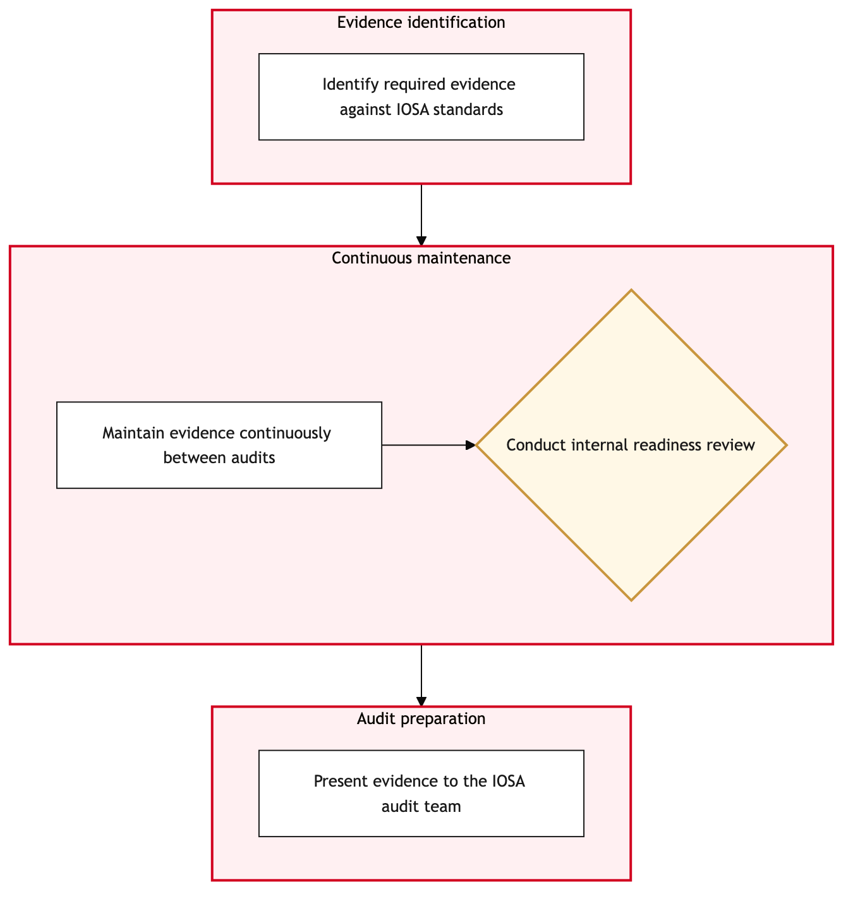

Updated 2026-08-18
IOSA Audit Preparation and Evidence
Records and evidence are assembled and maintained to support Air Canada's IOSA operational safety audit, demonstrating ongoing compliance with the Star Alliance membership safety standard.
Air Canada contextIOSA is not merely an internal safety exercise, it is a condition of Star Alliance membership, which means an audit finding has commercial and alliance-relationship consequences beyond the safety domain itself.
Process flow
Click to zoom

Process steps
▼
Phase 1 — Evidence identification
1 steps
| Step | Activity | Role | System | Input | Output | KPI | Dec | Exc | Pain point |
|---|---|---|---|---|---|---|---|---|---|
| 1.1 | Identify required evidence against IOSA standards | Safety Management Coordinator | ITSM PlatformC | Current IOSA standard set | Mapped evidence requirement by standard | Mapped for 100 percent of applicable standards each audit cycle | N | N | IOSA standards are periodically revised, and evidence mapping has to stay current with the latest version |
▼
Phase 2 — Continuous maintenance
2 steps
| Step | Activity | Role | System | Input | Output | KPI | Dec | Exc | Pain point |
|---|---|---|---|---|---|---|---|---|---|
| 2.1 | Maintain evidence continuously between audits | Safety Management Coordinator | ITSM PlatformC | Ongoing safety management activity | Continuously updated evidence record | Evidence updated on a rolling basis rather than only before an audit at 100 percent | N | N | Evidence assembled only in the weeks before an audit is a weaker demonstration of sustained compliance |
| 2.2 | Conduct internal readiness review | Safety Management Coordinator | ITSM PlatformC | Maintained evidence | Readiness review findings | Conducted at least 90 days before the scheduled audit at 100 percent | Y | N | A readiness review finding a gap close to the audit date leaves little time for genuine remediation |
▼
Phase 3 — Audit preparation
1 steps
| Step | Activity | Role | System | Input | Output | KPI | Dec | Exc | Pain point |
|---|---|---|---|---|---|---|---|---|---|
| 3.1 | Present evidence to the IOSA audit team | Safety Management Coordinator | ITSM PlatformC | Reviewed and complete evidence | Presented audit evidence | Presented complete and organised for 100 percent of requested standards | N | N | Evidence organisation quality directly affects how efficiently the audit team can complete their review |
Swim lanes
Safety Management Coordinator1.1 2.1 2.2 3.1
Systems touched
ITSM PlatformC
Key performance indicators
- Mapped for 100 percent of applicable standards each audit cycle
- Evidence updated on a rolling basis rather than only before an audit at 100 percent
- Conducted at least 90 days before the scheduled audit at 100 percent
- IOSA audit findings closed within the required remediation timeframe at 100 percent
Risks and control points
- Evidence assembled only in the weeks before an audit being a weaker demonstration of sustained compliance
- A readiness review finding a gap close to the audit date leaving little time for genuine remediation
- IOSA standards being periodically revised, requiring evidence mapping to stay current
- An audit finding carrying commercial and Star Alliance membership consequences beyond the safety domain
Air Canada Process Wiki — process and systems reference compiled from public sources
for IT Application Management and User Support pre-sales discovery.
Built 2026-08-18. Every system carries an evidence tier: tier C is an industry pattern and tier U is an open
question, and neither should be asserted as fact about Air Canada without confirmation in discovery.
Not affiliated with or endorsed by Air Canada. Air Canada, Aeroplan and Altitude are trademarks of Air Canada.